movements
movements is a sequencer of samples from audio files or of slices from recorded input.
set up
requirements
- grid (128)
- audio files or sound source
in maiden …
;install https://github.com/leontoddjohnson/movementsoverview
This script was designed with flexible sequencing and independent track adjustment in mind. movements consists of 11 individual tracks, each with their own separate clock. Each track has its own set of parameters which can be individually adjusted, without affecting the other tracks. Also, each track allows you to sequence up to 128 steps.
The 11 tracks are divided into two different “functionalities”:
- sample (tracks 1-7): pre-loaded audio files
- tape (track 8-11): slices from recorded input (or loaded files)
The idea is for all tracks (regardless of functionality) to share roughly the same attributes. I.e., if you can do it with sample, you can do it with tape, and vice versa. Thus, both share the same parameters, with a few caveats.
tldr; basic setup
sample
Refer to the grid navigation bar and the sample config page, below.
- Load some samples from a folder into a bank with K2 on the track pool display.
- On the sample config (grid) page, load samples onto the selected track cue by holding ALT + the sample pad.
- Once you have samples you’d like to load onto a track, hold ALT + the track pad. When this track’s sequence is played, it will cycle through these samples.
- Add some steps on the sample seq page. Maybe adjust some levels on the sample levels page (select the S1 pad twice).
- Play with the clock time for each track on the sample time page, and control track levels on the sample config page or the sample params display.
- Navigate to the sample delay display section with K1 + E1, and adjust the sample delay on the corresponding display.
tape
Refer to the grid navigation bar and the tape config page, below.
- Choose a buffer with load some audio into a partition:
- Option 1: Load a file at the current slice with K2 on the slice pool display.
- Option 2: Record into the current slice with K2 on the tape waveform display.
- On the tape config (grid) page, load slices onto the selected track cue by holding ALT + the slice pad.
- Once you have slices you’d like to load onto a track, hold ALT + the track pad. When this track’s sequence is played, it will cycle through these slices.
- Add some steps on the tape seq page. Maybe adjust some levels on the tape levels page (select the T1 pad twice).
- Play with the clock time for each track on the corresponding tape time page, and control track levels on the tape config page or the tape params display.
- Navigate to the tape delay display section with K1 + E1, and adjust the tape delay on the corresponding display.
sample
The sample functionality is meant for loading, playing, and sequencing audio files from a bank. There are 4 banks of up to 32 possible samples each, and there are 7 sample tracks with independent clocks. The sample functionality in this script uses an adaptation of the Timber engine.
- Each track has a
track_poolof samples that the sequencer will rotate through. You can adjust how (forward, backward, or random) with theplay_orderparameter in the PARAMS menu. - Once a sample is assigned to a
track_pool, it cannot be assigned to any other track. So, you cannot have a sample “shared” between tracks. - A
track_poolcan only contain samples from one bank. That said, each track can have a separatetrack_pool_cuefor each bank, and any of these can replace thetrack_poolon the fly using the grid interface (see the grid section below, as well as the ui section). - According to the Timber developer, Timber is intended to play up to 7 voices at a time; this is why the sample functionality is limited to seven tracks.
- When playing a sequence, movements will stop playing the “current” step before starting to play the next step.
tape
The tape functionality is meant for playing, recording, and sequencing slices from a partition of the stereo softcut buffer(s). There are four such partitions: each one is 80 seconds long1, and each partition is divided into 32 slices. By default, these slices are evenly distributed, so they start at 2.5 seconds long, but the user can adjust the start/stop positions for each slice. There are 4 tracks, each one with access to the four partitions.
- The
track_poolandtrack_pool_cuefor tape behave the same as they do for the sample functionality, above. Just swap out the word “sample” with “slice”, and “bank” with “partition”. - Each
partitionconsists of twobuffers, which can be thought of as either a single stereo buffer or two separate mono buffers to swap between. You can assign tracks to record/play as mono from either buffer, or as stereo from both. - A recording can only be made to a
slice, which can only exist within apartition. (Of course, the beginning and end of any slice can be adjusted, within the bounds of the partition.) - tape can record from the Norns input, or the sample functionality, or both. You can set this by adjusting the
tape_audio_inparameter. - You can record to a slice in two ways:
- “on demand” using the slice waveform display
- “in time” with the sequence using the tape seq grid page.
delay
Both sample and tape have their own independent delay functionalities. The sample side uses a SuperCollider delay bus in the Timber engine, and tape uses softcut. Both delay times are synced to the internal CLOCK using the same clock_fraction options as the sequencer (see below).
grid
sample pages
sample config
For both sample and tape, the best place to start is often with the config page.
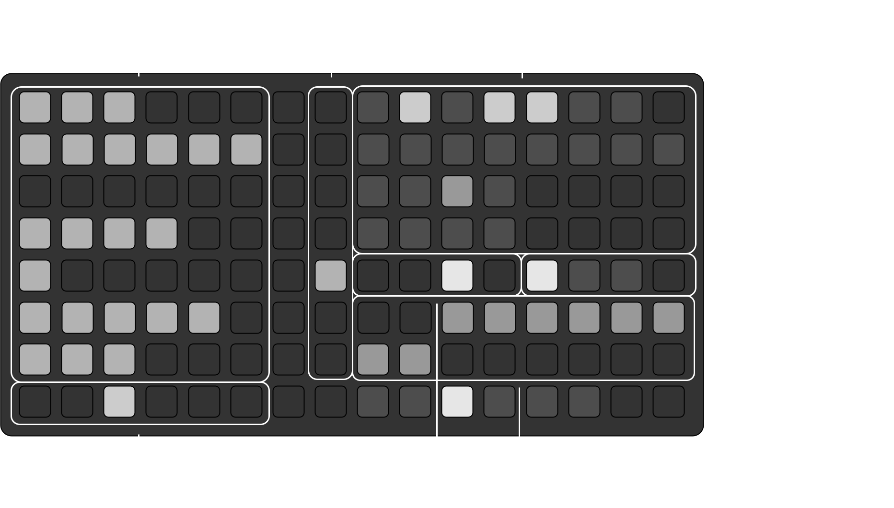
track parameters
- Each row in the track param adjustment region corresponds to a track. Making adjustments here will affect a parameter for the whole track. Select a parameter to adjust/focus on with the track param selection. For more on these, see the parameters section, below.
- The focused parameter will be shared across functionalities and pages.
- Hold ALT and select the pad in the seventh column (between the highest parameter value and the track selection) for the current track to randomize the current parameter pattern for that track-bank. Note: this will only work for the currently selected track.
track selection
- Select a track in the track selection region. This really just sets the display and grid to “focus” on that track.
bank
- Select samples in the bank region. The currently selected pad will light up when you hold the currently selected
bankpad in the bank selection region. - There are 4+1 levels of brightness here:
- (Only when you hold the current
bankpad) The selected sample will be brightest. - When a sample is part of the current
track_pool_cue(not yet loaded), it will be slightly less bright. - When it is loaded into the current
track_pool, it will be slightly less bright. - When a sample is loaded into some other track, it will be slightly less bright.
- Lastly, if there is an audio file loaded into that sample, it will be most dim.
- (Only when you hold the current
- If you hold the pad for a sample that is loaded into another track, that track pad will light up in the track selection region. In these cases, that sample is “used up”, and can’t be assigned elsewhere until it’s relieved from the
track_poolwith ALT +samplepad. - You can dictate the row/column for audio files in a bank by using a
<row><col>*...naming convention, where*is" ","-"or"_". For example, the file with the name 23_sound.wav would be loaded into the second row and the third column.- Duplicate or invalid indices will be overwritten by the latest related filename.
- If you are NOT using “row-column” indexing and you are numbering files, use a 3-digit syntax
###_..., or start all files in the folder with some character other than a 1, 2, 3, or 4. - Folders with more than 32 files will stop loading at file #32.
- In PLAY mode …
- pushing a pad will play (or stop) the sample loaded into that pad.
- “currently” playing samples will be indicated with a bright pad.
- Hold ALT +
a sample padto load a sample into the currenttrack_pool_cue. - When you’re ready, load the cue into the
track_poolwith ALT +the track selection.- This will only work if you are already focused on the track to be loaded (i.e., you are pushing an already lit
track selectionpad).
- This will only work if you are already focused on the track to be loaded (i.e., you are pushing an already lit
play mode
- For a sample (or slice), the play mode is different from PLAY MODE. It represents the way a sample/slice will be played.
- For a selected
sample, we have two sets of play mode options- Streaming Samples:
"Loop" "Loop" "1-Shot" "Gated"(defaults to Gated) - Buffer Samples:
"Loop" "Inf. Loop" "1-Shot" "Gated"(defaults to 1-Shot)
- Streaming Samples:
- Hold ALT and select a play mode to apply that play mode to all samples/slices in the current
track_pool_cue.
bank selection
- Select one of the four banks here.
- If a
bankhas audio files loaded into it, it will be slightly brighter than the rest. - Each bank has its own patterns (sample trigger patterns and parameter patterns). You can copy all pattern steps and parameter pattern values of the current
trackfrom one bank to another bank by holding ALT + the “from” bank + the “to” bank.- This only copies pattern steps, not sample selections.
- This will overwrite the pattern(s) on the “to bank”
sample range
- The sample range shows the range of the slice that is played. It makes more sense when seen in conjunction with the sample waveform display.
- Selecting a pad in this range dictates the
starttime for the playable range of the sample. - Hold ALT while selecting a pad to choose the
endtime for the playable range.
sample sequence
The sample seq page is an interface for the transports for the 7 sample tracks.
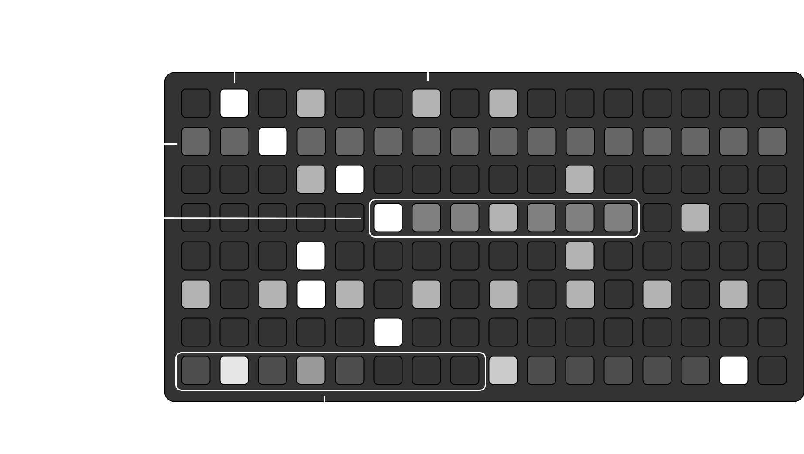
track rows
- The first 7 rows correspond to the 7 sample
tracks. When a transport is playing, movements will cycle through the samples loaded in thetrack_poolas long as astepis active. - There are 4 brightness levels here:
- The current
stepwill be the brightest in a row. - Slightly less bright are inactive/“loaded” steps. (Of course, unlit pads are “skipped”)
- Slightly less than that are pads to indicate an “island”. The transport in an island will only loop within that range until the island is removed.
- The dimmest pads indicate the selected row/selected
track.
- The current
- To select a track, hold ALT and push a pad in that row. The selected track spans across the 4 sample pages.
- To create an island, hold the first step of the island, and then the last step of the island.
- To remove this, reselect the same bounds.
- In PLAY MODE:
- selecting a pad forces the transport to that step.
- hold ALT and a pad to force all sample transports to that step.
pattern bars
- The sequencer for each track is completely independent of the rest. It can have a different length and a different time between steps.
- Each sequence is a series of 1-8 pattern
bars, where abaris 16 steps. If a patternbarhas a step loaded into it, then that bar and the ones before it contribute to the sequence. So, if I activate step 10 and step 36, then that track will have a sequence of length \(3 \cdot 16 = 48\) steps. - There are 3 brightness levels for the pattern bars:
- The current
baris the brightest. - If the current track transport is in a pattern bar, that bar will be slightly less bright.
- In FOCUS MODE, the dimmest pads have active steps between them for the selected track. In PLAY MODE the dimmest pads have active steps between them for at least one track.
- The current
- In PLAY MODE, the page will “follow” the transport for the current track.
- You can copy a pattern (along with the parameter patterns) from one bar to another bar by holding ALT + the “copy” bar + the “paste” bar.
sample levels
Parameter levels for each sample step can be adjusted in the sample levels page.
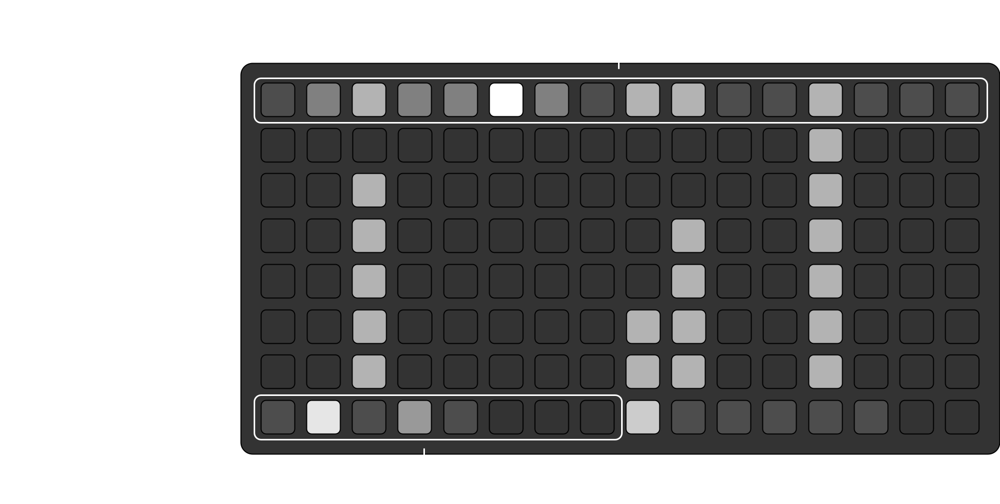
- The top row shows the sequence for the selected track, and it can be adjusted in the same way as any row in the sample sequence page.
- When you add a new step to the sequence, the parameter value will default to the track value.
- The middle region allows for parameter adjustment for each step. More on parameter adjustment in the parameter section, below.
- The bottom navigation row remains the same as the rest of the grid pages.
- In PLAY MODE, the pattern bars becomes the track param selection region seen in the sample config section above. In this mode, you can use that region to select the parameter to focus on.
sample time
Each track proceeds on its own independent transport. These transports move from one step to the next based on either (a) a fraction of a beat (from the tempo set in PARAMS/CLOCK), or (b) a fraction of a second. For sample, these clock_fractions can be adjusted on the sample time page.
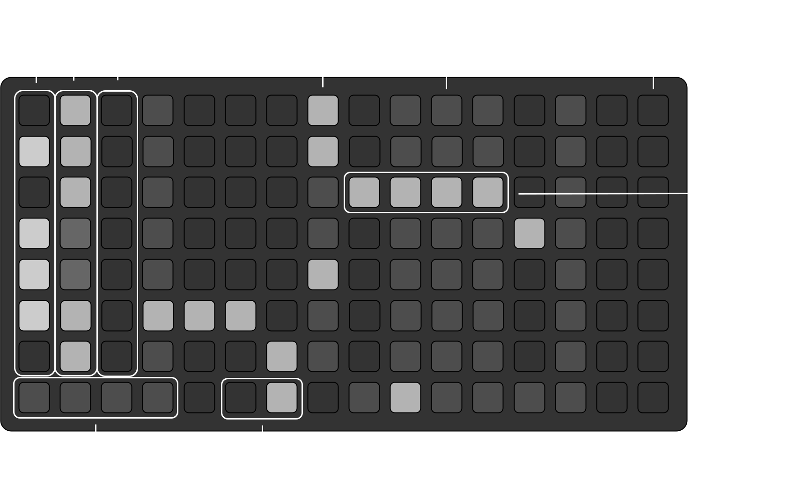
- Each of the first 7 rows correspond to a sample track.
- The first column toggles between playing and not playing a track sequence.
- Hold ALT and select a lit pad to stop all transports
- Hold ALT and select an unlit pad to play all transports
- The second column dictates whether the sequence time is based on the beat or based on seconds.
- Columns 4-16 indicate the
clock_fraction, or the fraction of a beat or second to exist between steps:1/8, 1/7, 1/6, 1/5, 1/4, 1/3, 1/2, 1, 2, 3, 4, 5, 6
- Hold one pad, and select another one in the same row, and you’ll create a
clock_fraction_pool. The time between steps will be randomly chosen from this range, for each step.- Select any other pad in the row to clear the pool.
- The dimly highlighted column indicate “compatible” fractions. If all your
clock_fractionselections are in one of these columns, you’ll find the syncopation to be relatively agreeable.- The fractions
1/8, 1/4, 1/2, 1, 2, 4are highlighted upon entering the page. These complement the typical \(4/4\)-type time. - Hold ALT, and you’ll find that the fractions
1/6, 1/3, 1, 3, 6are highlighted. These complement a sort of \(3/4\)-type time.
- The fractions
- In the bottom row, the 6th and 7th pads act as a metronome, flashing based on the last selected clock fraction. The time type of the last pressed clock fraction (beats or seconds) will reflect here as well.
play triggers
track cue
Hold a pad in the third column to define track i as a “play trigger”, then select an unlit pad in the first column to assign the play trigger to track j. Track j will start at step 1 when track i reaches the end of its current pattern bar (i.e., they will sync up at the first step of a sequence bar). For this to work, track i (the trigger) must only have a singular clock_fraction (no clock range).
If you hold a pad in the third column and select a lit pad in the same row (i.e., a playing track), then that track will STOP at the end of its current pattern bar.
bank cue
Hold a pad in the third column to define track i as a “play trigger”, then select one of the four pads in the bottom row (at the lower left) to assign the trigger to bank j. Once track i reaches the end of its current pattern bar, all tracks will switch to bank j and continue playing (even if there are no samples or patterns loaded on that bank).
- If you hold a pad in the third column, you’ll be shown the tracks or bank triggered by that track.
- A track can trigger multiple other tracks.
- A track can only trigger one bank, and only one bank can be triggered at a time.
- Re-selecting any “triggered” track or bank (no need to hold anything) will undo the trigger.
tape pages
For the most part, tape pages and sample grid pages look and function the same way, with two main differences:
- tape only deals with four tracks while sample deals with 7 tracks.
- tape incorporates buffer and recording management.
tape config
The tape config page is very similar to the sample config page.
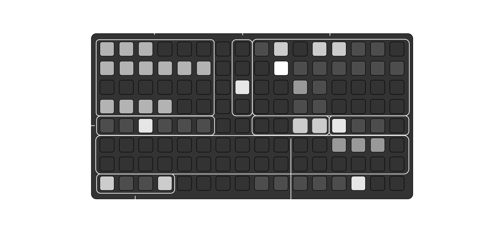
- The track param adjustment, track param selection, and track selection regions function the same way as their complements on the sample side.
- PLAY MODE also functions the same way.
- Instead of
banks(of audio files), the tape functionality offers fourpartitionsof the stereo buffer. Each partition is divided into 32slices. In the same way you can selectsamplesin the sample functionality, you selectsliceswith the tape. - play mode and partition selection function the same way as their complements on the sample side. The default play mode for tape is 1-Shot.
- The slice locator indicates where in the partition the selected
sliceexists. You can use this locator in the same way you might use the sample range on the sample config page.- That is, you can choose where the slice starts and stops (using ALT for the latter).
- The buffer selection region dictates whether a track is assigned to the left buffer (bright) or the right buffer (dim). Note:
INPUT 1on the Norns always corresponds to the first buffer, andINPUT 2on the Norns always corresponds to the second buffer. - You can assign
stereo tracksby assigning buffers andpanaccordingly:- The only possible stereo pairs are tape tracks
8-9and tracks10-11, where the lower track number is LEFT. - To assign a pair a stereo, set the panning for the two tracks as hard left, and hard right, respectively. Also, make sure that the buffers are set accordingly (lower to the left, and higher to the right).
- The left track is the one that “drives” the stereo pair. E.g., if you want to sequence the
8-9stereo pair, you would set the tracks as described above, and only adjust/sequencetrack 8. In this way, movements can only accommodate two stereo tracks.
- The only possible stereo pairs are tape tracks
tape sequence
The tape seq page takes the sample seq and adds the ability to arm recording at a step.
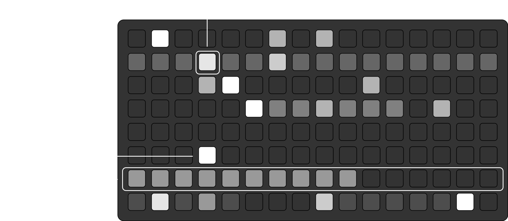
- The first four rows correspond to the four tape tracks. These behave the same way as the rows in the sample seq page.
- Select a step in the 6th row to arm recording at that step. As long as the step corresponds to a step in the focused track, movements will record to the slice corresponding to that track.
- This applies to stereo track pairs as well.
- When recording, you’ll hear the sound of the slice being overdubbed based on the
prelevel set for that track. For more on this, see the parameters section. - The 7th row shows recording progress for the slice (it is also indicated in the slice waveform display).
- Recording takes precedence. So, if a track is recording, it will not play any step until the recording is through.
tape levels
The tape levels page functions the same way as the sample levels page.
tape time
The tape time page functions the same way as the sample time page. The only difference with tape is there are only four rows for the four tracks.
ui
sample displays
For all sample displays, the top navigation bar indicates the following:
TRACK • BANK • filename of currently selected SAMPLE
Use E1 on its own to scroll through the following displays.
track pool
The first sample display is the track pool display. On the right side is the list of audio files corresponding to samples in the track_pool_cue. These are “on deck” to be added to the track_pool, whose audio files are listed in brighter text on the left side.
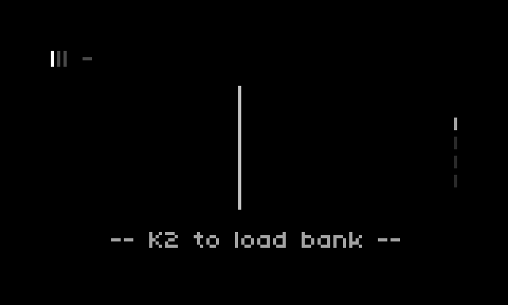
- K2 on this page will enter the file selection, where you can pick a folder to load into the current bank for the focussed track.
- After a folder is loaded, the folder name will show up at the bottom of this page (specifically for the selected bank).
- Loading a new folder into a bank will overwrite all previously loaded samples.
- The order of the audio files on this page correspond to the order of the
samples in thetrack_pool(andtrack_pool_cue). To ensure a particular order, make sure to select (or deselect) samples on the grid accordingly.
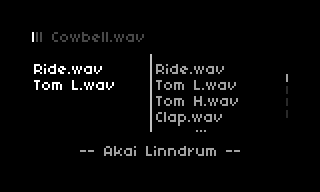
- Use E2 to scroll through the
track_pool, and E3 to scroll through thetrack_pool_cue.
track params
For the sample functionality, the track params display shows the current track parameter on the left, and the noise level on the right.
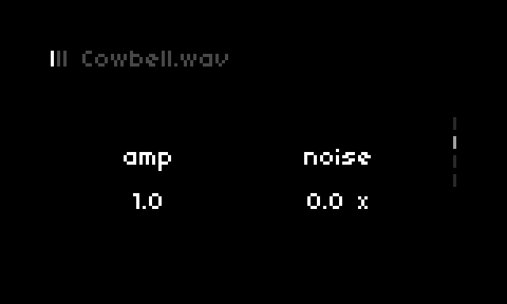
- E2 will adjust the track parameter level (in this case,
amp), and E3 will adjust thenoiselevel. - For
filterandscaleparameters, K2 swaps between types (i.e., between low pass / high pass, and forward / reverse). - The track parameter will update with your selection on the grid.
sample waveform
The sample waveform display can show the waveform for the selected sample. By default, Timber will only render the sample waveform when requested.
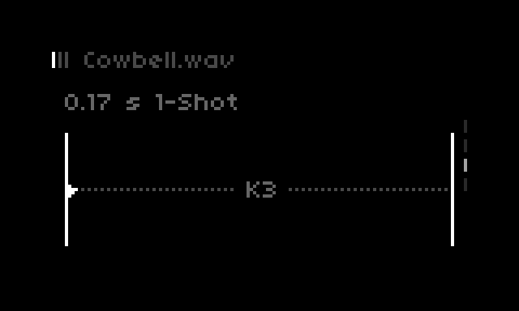
- Use K3 to render the waveform.
- Use E2 to adjust the start frame, and E3 to adjust the end frame.
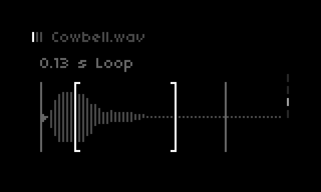
- When the play mode (on the grid) is set to
"Loop"or"Inf. Loop", this display will show thestartandstoppositions (vertical lines) as well as theloop_startandloop_stoppositions (brackets).- To switch between setting these, use K2. Then, E2 and E3 work as expected.
- The play mode and the sample information will show above the waveform.
- Along with the associated grid pads, you can use K3 to swap between sample play modes on this page (after the waveform is rendered).
sample envelope
When the play mode is set to "Gated" or "1-Shot", then you can adjust the amplitude envelope for the sample. This is done on the sample envelope page.
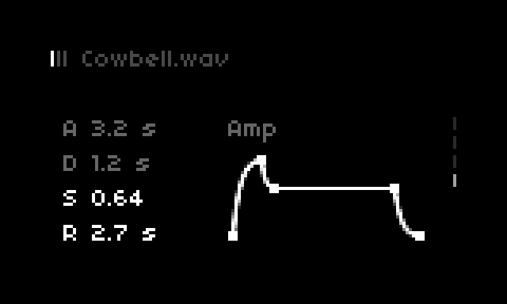
- Use K2 to swap between adjusting
attackanddelay(the top two) or adjustingsustainandrelease(the bottom two). - E2 and E3 will make the adjustments accordingly.
tape displays
For all tape displays, the top navigation bar indicates the following:
TRACK • BANK • SLICE_start - SLICE_end
Again, use E1 on its own to scroll through the following displays.
track pool
The track pool display for tape shows the two buffers of the currently selected partition, and the slices assigned to the track_pool and track_pool_cue. Use E2 to adjust the slice start time and E3 to adjust the slice end time for the currently selected slice.
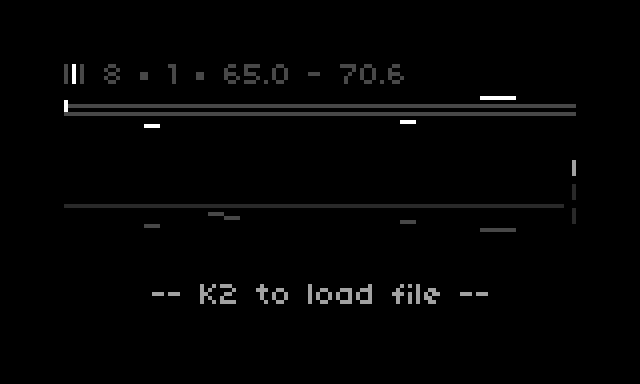
- The bright bar closest to the buffers indicates the range of the currently selected sample.
- The bright-ish bars in the middle region represent the slices assigned to the current
track_pool. - The dimmer bars in the lower region represent the slices assigned to the current
track_pool_cue. - Use K2 to load an audio file starting at the beginning of the current
slice.- The file will only load into the buffer assigned to the current track. If the track is a stereo pair, and you are calling K2 from the left track, this will load in stereo.
- The file will start at the beginning of the current
slice, but movements will cut it off at the end of thepartition. - Set the
overdublevel in the track params display to preserve that amount of audio “under” the audio file. I.e., ifoverdub == 0, then the audio file will overwrite everything in that range.
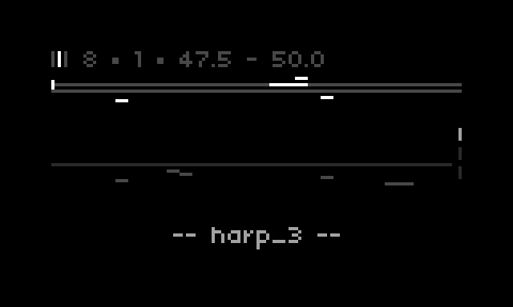
- The top two horizontal lines indicate the left and right buffers, respectively. In the regions where these are bright, there is audio.
- The
rec_thresholdparameter in PARAMS sets the minimum level required for audio to be shown here.2 E.g., increasing this parameter will make the “audio regions” seem more sparse. - Adjusting
rec_thresholdwill also determine which grid pads in the partition indicate audio.
- The
- If your selected
slicecontains a region in which a file loaded into the buffer, the text at the bottom of the screen will show the name of the latest file loaded in that range. - Use K1 + K3 to clear the audio in a selected slice range. Again, the
track_buffer(and whether the track represents a stereo pair) will dictate which buffer(s) are cleared.
track params
This display functions the same as the track params display for sample. The only difference is that the “extra” parameter here is overdub level.
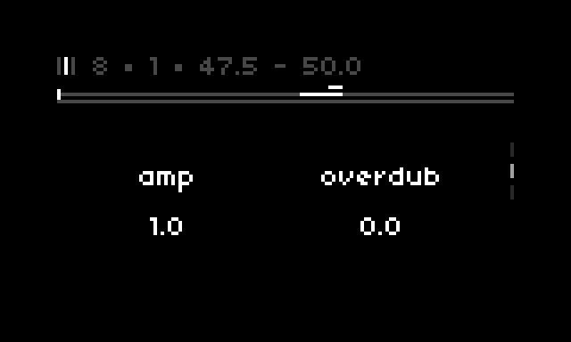
- On this display, E2 and E3 will still adjust the
slicestart and end times, respectively.
track waveform
The track waveform display for tape is very similar to the same for sample.
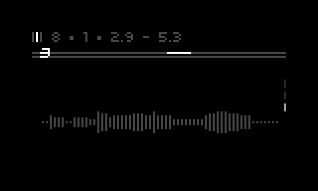
- The waveform on this page will render after a recording is complete. While softcut is recording, you’ll see a little circle show up on the bottom of the display.
- This includes loop recording. You won’t see the updated rendering until the record indicator is gone.
- K2 will record mono to the current track, and if the track is the first of a stereo pair, K3 will record stereo.
- Note: if recording onto a stereo pair, you’ll need to manually update the
overdubfor both tracks. This allows for more flexibility in stereo recording. - If already playing/recording, either key will stop the recording/playing.
- Note: if recording onto a stereo pair, you’ll need to manually update the
- On this display, E2 and E3 will still adjust the
slicestart and end times, respectively. - If the current track is playing a slice, then either K2 or K3 on this page will stop the track from playing.3
delay displays
There is one display for sample delay, and another for tape delay.
sample delay
On the sample delay page, you can adjust the delay feedback and delay time using E2 and E3, respectively.
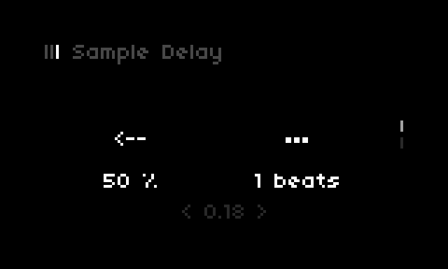
tape delay
Similarly, on the tape delay display, you can adjust the delay feedback and delay time for both left and right channels.
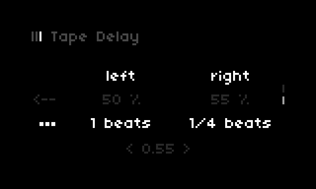
- Use K2 or K3 to swap between
feedbackandtime. - Then, use E2 and E3 to adjust the left and right channels of the delay, respectively.
- Hold K1 and use E2 or E3 to adjust the overall delay level (at the bottom of the display).
parameters
Both functionalities share the following parameters:
- amplitude
- panning
- filter
- delay
- probability
- scale
- interval
These are adjustable at both the track level and the step level. In addition to these, the sample functionality has an option to add noise to a sample, and the tape functionality has an option to set the overdub (or “pre”/“preserve”) level for recording, and loop-crossfade time for slices. These three parameters can be set only at the track level.
Samples/Slices are triggered in a sequence by a pattern of selected steps. Further, each step can have its own set of parameter settings (for the 7 above parameters), so parameter values can can change from step to step.
Lastly, when you make adjustments to the track level, you will also make proportional adjustments to each step based on a combination of the parameter pattern and the track level itself; we call this “squelching”. Note: squelching does not apply to the interval parameter.
squelching
There are two basic kinds of squelching: unidirectional and bidirectional.
unidirectional
Unidirectional squelching is applied to amplitude, filter, delay, and probability. Essentially, the track value dictates the maximum value for a scale, and then the parameter pattern value dictates the value within the scale.
For example, if the track level value for amplitude is set at 0.5 and the parameter pattern level is set to 0.8, then the final value for that step will be 80% of the way to 0.5, or 0.4.
bidirectional
Alternatively, bidirectional squelching is applied to panning and scale. In this kind of squelching, sample step values fall within a proportional distance from a new center.
In other words, the track value becomes the new “center”, and the parameter pattern value translates to the new scale.
amplitude
amp is the amplitude (volume) of the playing sample/slice. It’s represented on the grid as filling from left-to-right on the config page, and from bottom to top on the levels page.
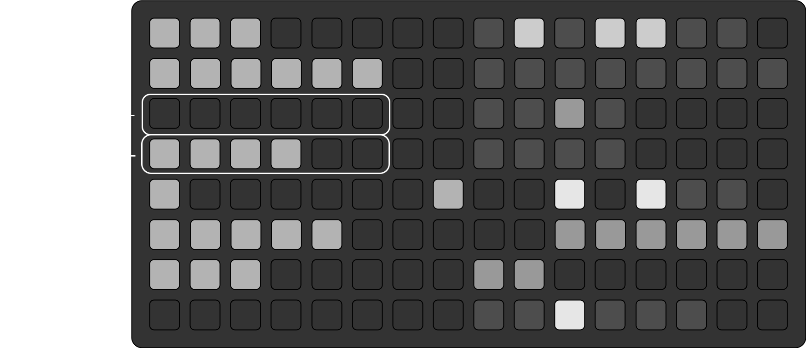
- The bottom row (on the left side) will be blank for
amp. From another parameter focus, re-select the pad to revert to theampparameter.- The grid diagram in the panning section shows the other parameter options.
- To set the amplitude to 0, re-select the currently set value. Otherwise, the pads correspond to the following levels (in decibels):
-28 | -18 | -12 | -6 | -3 | 0
panning
The pan value is bidirectional, and it’s illustrated from left-to-right on the config page, and from bottom-to-top on the levels page (respectively).
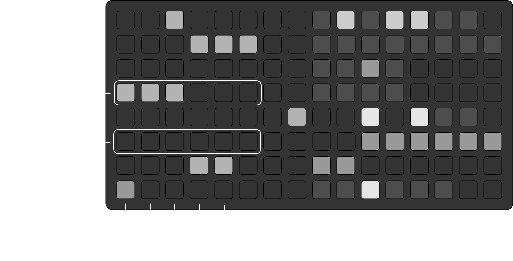
- The values on the grid correspond to the following pan values:
-1 | -2/3 | -1/3 | 1/3 | 2/3 | 1
- Selecting the “currently set” value will revert the panning back to 0.
- The squelch “width” for
panis 0.5 on either side. For example, if a step level is set to -1 and the track level is set to 0.5, then the final level at that step will be 0.
filter
The filter parameter is unidirectional, but it can be defined from “bottom to top” or from “top to bottom” depending on one of two filter types:
"Low Pass"(Default)"High Pass"
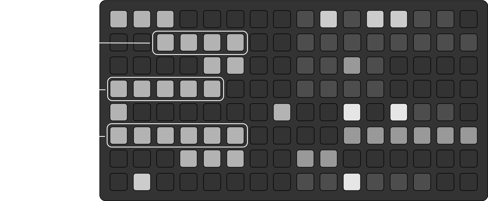
- To swap between the two filter types, re-select the most extreme value. So, for track 2 in the example above, if we push the third pad from the left, this filter will change from high pass to low pass.
- In the track parameter page in the UI, you can also press K2 to swap between types.
- The track’s filter type determines the filter type for all steps. That is, if the track is set to one filter type, then all steps will be of the same type.
- This is made apparent in the levels page(s), as the direction of the highlighted pads will always match the direction of the track
- For both sample and tape, you can adjust the
filter_resonancefor each track in the PARAMS menu. - As long as all pads are bright, then you are getting the full range. In this case, just be careful to remember which type you are dealing with when making adjustments on the fly.
- The values on the grid correspond to the following filter frequencies, in Hertz:
100 | 500 | 1000 | 5000 | 10000 | 20000- When you switch from high pass to low pass (or vice versa), the track frequency level as well as all parameter pattern frequency levels will mirror themselves. E.g.,
500for low pass becomes10000for high pass.
delay
The sample and tape functionalities both have their own delay bus. The sample delay is mono, and the tape delay is stereo. Each track can be independently sent to a bus based on their delay parameter level. The delay parameter sets an independent send level for each track (and optionally, for each step).
This is a unidirectional parameter, and it manifests on the grid in the same way amp does.
- By default, the
delayfor each track is set to 0, and new steps get a “relative”delaysetting of 1. - You can adjust the
delay timeand thedelay feedbackfor each delay bus in the UI. - For tape delay, you can adjust both time and feedback independently for the left and right channels.
- Both delay types have an overall level that needs to be set.
- All delay parameters can be set in the PARAMS menu, or on the corresponding tape delay display.
- The levels on the grid correspond to the same decibel levels as
amp: these are essentially delay send levels.
probability
The probability parameter determines how often a sample/slice is triggered. This is a unidirectional parameter, so the track level defines the maximum probability, and the parameter level pattern defines relative probabilities within this range.
Again, this is a unidirectional parameter, so it manifests on the grid in the same way amp does. The levels on the grid correspond to the following probabilities:
1/6 | 2/6 | 3/6 | 4/6 | 5/6 | 1
scale
The scale parameter determines the pitch and direction of a sample/slice. This is a bidirectional parameter that actually behaves similarly to filter on the grid.
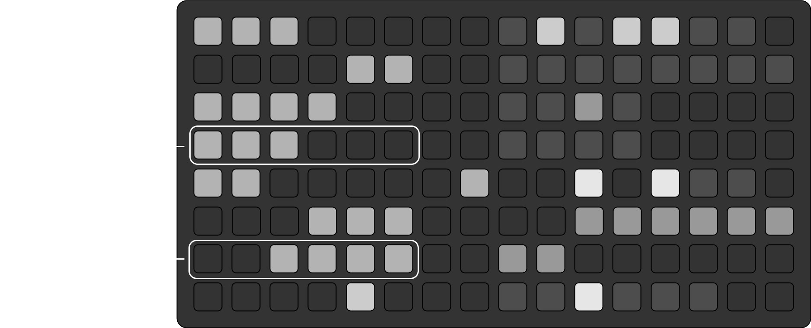
- When a sample/slice is to be played forward, the scale pads on the grid pads light up from left-to-right. When set to be played backward, the pads light up from right-to-left.
- To swap between being played forward or in reverse, tap the extreme-most pad selected. So, for track 4 in the example above, pushing the third pad would make that track play its slices in reverse.
- In the track parameter page in the UI, you can also press K2 to swap between types.
- Like filter, the track direction defines the direction of all samples assigned to that track. This is also reflected in the levels pages for sample and tape.
- Scale is dependent on the
intervalparameter, which defines a note of the scale (e.g., “5th”, “4th”, “7th”, etc.). See the interval section for more on this.- The default value for
intervalis a perfect 5th.
- The default value for
- The values on the grid correspond to the following scale values, where “
ova” means “octave”, and “interval” is an interval above the root note:- Forward:
-ova | -ova+interval | root | root+interval | +ova | +2ova - Backward:
+2ova | +ova | root+interval | root | -ova+interval | -ova - So, for example, track 5 in the example above would be played one interval above one octave below.
- Forward:
- Again, this is a bidirectional parameter, where the “middle” value is the
root. The sample/slice itself defines the “root” pitch.- The
trackvalue defines the middle value for squelching. The final value is within 2 increments of this value. So, if thescalevalue for a (forward) track is+ova, then the lowest parameter pattern value will correspond toroot+interval.
- The
interval
The interval parameter defines what note of the scale to play when scale is set to play at this interval.
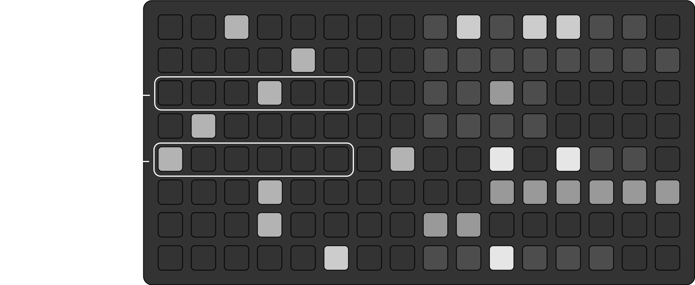
- The interval here corresponds to either a
majoror (natural)minorscale. This can be set in the PARAMS menu. - The values on the grid start with the
2ndnote of the scale, and end with the7thnote of the scale:2nd | 3rd | 4th | 5th | 6th | 7th
- Uniquely, there is no squelching for the interval. There are two ways the track level relates to each pattern step:
- (Default) The track level defines all step values.
- The step value overwrites the track level
- By default, each pattern level value for
intervalis empty (as seen in the levels page). In this case, the trackintervaldefines the interval for each step. - When you define a parameter pattern level on the levels page, you set that
intervalvalue for that step. This overwrites anything defined at the track level. - To set the track level as the defining value on the levels page, select the current step value, and that will remove the selection. The step
intervalis then defined by the track level.
filenaming
Download the /lib/filenaming.py file to rename Ableton clips in a way that’s convenient for organizing in the sample banks. By default, this method assumes you want different instruments (or sample “types”) loaded by row or by column in the bank.
- Slice all the clips that you’d like to crop in Ableton (in Arrangement View).
- Use Cmd + A to select up to 8 clips (to name “by row”), up to 4 clips (to name “by column”), or up to 32 clips (to name “by bank”), and use Cmd + R to give them all the same name. Multiple clips in Ableton can have the same “name”. Repeat this step for each row, column, or bank, as needed.
- Select all (up to 32) clips, and Crop them in Ableton using Cmd + Shift + J.
- Create a new folder to contain the renamed clips. Name it as you like.
- Find the <abletonproject>/Samples/Processed/Crop directory, and Copy the corresponding clips from this original Crop folder into your new folder (use the date/time as a guide …). Ableton needs the original files named as they are. Do not edit the “Crop” folder.
- Navigate in your command line to the place where the filenaming.py file is stored.
- Run
python filenaming.py <filepath> [name_by] [filetype]using the filepath in #4, wherename_byisrow,col, orbank.
E.g.,python filenaming.py /Users/Me/My_Stuff/cropfolder row wav, where row and wav are the default (so, I could omit them here, and it would behave the same way).4 - You’ll be prompted to verify you want to change file names; I recommend waiting until you’re absolutely sure it’s correct :).
- You do not need the .asd files in the new folder, so you can delete them if you like.
a few notes on this
- For individual clips, it’s best to just use “Consolidate” in Ableton. This makes a new Consolidate folder, and you can find them in there.
a note on updates
Right now, I have no intention of making major updates to the script. The only changes I expect to make include minor UI adjustments, performance improvements, and bug fixes. I’ll keep track of issues here.
For most of the unimplemented ideas that came to mind, there was good a reason why I chose not to implement it (usually it came down to “less is more”). But, for the sake of sharing, here are a few features I could have included, but chose not to:
- Incorporating LFOs. True, the Timber engine offers an LFO functionality for samples. But, this interferes with movements’ ability to adjust sample panning and amplitude levels in a pattern. In a sense, the LFO overcomplicates the automation that is already happening due to parameter patterns. The same point can be made for adding an LFO for the tape functionality.
- Setting different sequence “start” locations (other than the first bar of the grid). Again, the juice didn’t seem worth the squeeze here. Even so, I think it’s kind of nice to know that every sequence starts at the beginning of the same bar. At least, the “island” functionality provides a decent way of getting around this, though.
- Sending MIDI. This was a tough decision, but it comes down to the purpose of this script: it is a sampler, so it should be used that way. There are myriad sequencer scripts out there that are great for controlling an outboard MIDI device, and many of their sequencer functions are better than movements anyway! So, I recommend looking into those for that purpose.
Footnotes
In total, the stereo softcut buffer is about 350 seconds long, and for this script, we use softcut for both the tape and the tape delay functionality. Since delay time is synced with the internal clock, the tape delay uses 6 x s seconds of the buffer, where 6 is the highest
clock_fractionvalue, and s is the number of seconds per beat of the internal CLOCK/TEMPO. With a low end BPM of 12, this equates to 6 x (60 / 12) = 30 seconds, leaving the 320 seconds needed for the tape functionality.↩︎Fast encoder turns to update the
rec_thresholdparameter may seem to cause a minor lag on the norns. This is because each delta change to the parameter requires the script to run a “check” across all 19,200 samples of the tape buffer. Nothing is wrong, the value you want in the end will update accordingly. It is recommended, though, that you only update this parameter when nothing is playing to avoid any lagging.↩︎Note that tape slices are not separate audio clips existing in their own right, as they are on the sample side. When a slice is played, the associated track (i.e., softcut voice) playhead is moved to that position in the buffer, and it plays. To stop playing a slice is to stop playing the track altogether.↩︎
On a Mac, you can drag and drop the folder onto the terminal itself to show the filepath.↩︎